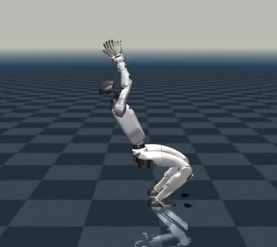
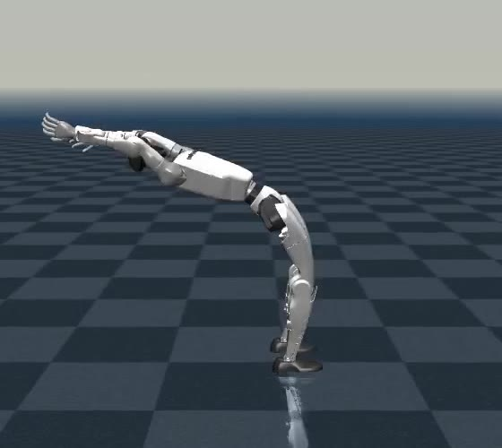
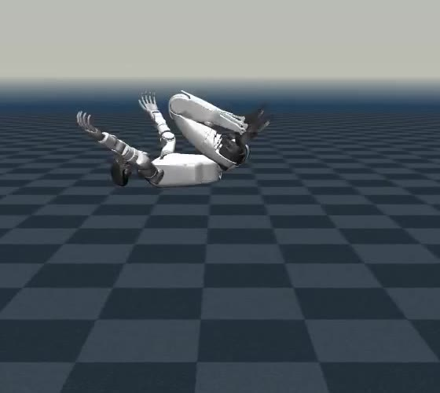
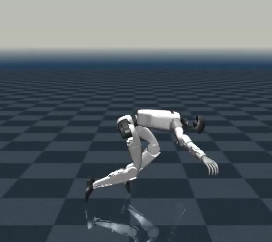
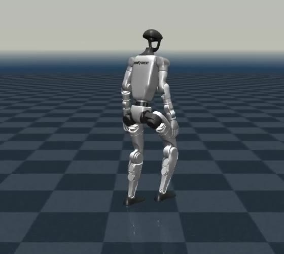

Unitree G1 · 23 DoF · MuJoCo
A whole-body nonlinear MPC plans contact wrenches and joint accelerations on the full rigid-body dynamics. A contact-consistent whole-body controller re-projects that plan onto the robot’s measured state at 500 Hz.
00 · Overview
01 · The problem
The standard pipeline plans on a single rigid body and asks a whole-body controller to make it real. The plan never sees the swing leg, the arms, or a torque limit.
On a humanoid whose limbs carry a large share of the mass, the swing leg and the arms generate angular momentum that a single-rigid-body plan does not contain. The whole-body controller then tracks forces and accelerations that the real body may not be able to produce. It can redistribute the contact wrench inside the support polygon the plan already fixed, but it cannot anticipate.
We move the full rigid-body dynamics into the MPC. The plan is then dynamically consistent by construction, and the WBC gets a different job: not repairing a reduced plan, but re-projecting a consistent one onto the state the robot is actually in.
The MPC plans contact wrenches and joint accelerations over 1.1 s. Between two MPC updates (16.7 ms) and right after a push, the measured state departs from the plan; the WBC closes that gap every 2 ms.
02 · Method
Optimizes both 6-D foot wrenches and all 23 joint accelerations on the floating-base equations of motion. Stance and swing conditions are projected equalities; friction, center of pressure, joint limits and self-collision are relaxed barriers.
Finds the smallest correction to the planned acceleration and wrench that satisfies the full equations of motion, friction, CoP and torque limits at the measured state. Returns the plan exactly when the robot is on it.
A supervisor watches the centroidal momentum and its rate and inserts steps into the contact schedule. Where to step, and how to use the waist and arms, is left to the MPC.
Joint accelerations are inputs; the six unactuated rows of the equations of motion give the base acceleration. Those rows are the centroidal dynamics, including the term through which the waist and arms move the base1.
Direct multiple shooting, RK4, \(\Delta t=35\) ms, one Gauss–Newton SQP iteration per cycle (real-time iteration), QP solved by HPIPM. Built on OCS2 and Pinocchio with ahead-of-time CppAD code generation.
Inverse dynamics of the plan is exact only on the planned state. The WBC solves a 41-variable QP on the measured state, so the torque is consistent with the body the robot is actually in, and friction, CoP and torque limits hold.
qpOASES, hot-started between cycles. Mean solve time 55 µs on a G1-sized problem (41 variables, 57 constraints) in a synthetic benchmark2.
| SRB-MPC + WBC | WB-MPC + inverse dynamics | WB-MPC + WBC (ours) | |
|---|---|---|---|
| Limb momentum in the plan | ✗ | ✓ | ✓ |
| Joint limits and self-collision in the plan | ✗ | ✓ | ✓ |
| Hip / arm strategy under a push | ✗ | ✓ | ✓ |
| Torque evaluated on the measured state | ✓ | ✗ | ✓ |
| Friction and CoP enforced at the motor command | ✓ | ◐ | ✓ |
| Joint torque limits enforced | ◐ | ✗ | ✓ |
✓ by construction ◐ only in the plan, not after joint PD feedback, or depends on the implementation ✗ not modeled.
03 · Results
Forward, backward, lateral and turning commands on flat ground, with the WBC in the loop. Each clip starts from standing; arms swing with the gait phase, and the feet keep a minimum lateral distance.
| Metric | SRB-MPC + WBC | WB-MPC + ID | WB-MPC + WBC (ours) |
|---|---|---|---|
| \(v_x\) RMSE (m/s) | TBD | TBD | TBD |
| Roll / pitch RMSE (rad) | TBD | TBD | TBD |
| Min. CoP margin (%) | TBD | TBD | TBD |
| Max. friction ratio \(\|\mathbf f_{xy}\|/\mu f_z\) | TBD | TBD | TBD |
| Max. \(|\tau|/\tau_{\max}\) | TBD | TBD | TBD |
| Max. stable speed (m/s) | TBD | TBD | TBD |
A 0.1 s impulse on the pelvis. The supervisor inserts a step; the MPC decides where it lands and swings the waist and arms against the push before it does.
SRB-MPC + WBC
WB-MPC + WBC (ours)
assets/push_srb.mp4assets/push_ours.mp4| Direction (walking) | SRB-MPC + WBC | WB-MPC + ID | WB-MPC + WBC (ours) |
|---|---|---|---|
| \(+x\) forward | TBD | TBD | TBD |
| \(-x\) backward | TBD | TBD | TBD |
| \(+y\) right-to-left | TBD | TBD | TBD |
| \(-y\) left-to-right | TBD | TBD | TBD |
Force in newtons, 0.1 s impulse on the pelvis, increased in 10 N steps until a link other than the feet touches the ground.
04 · Backflip
A standing backflip of the G1 without learning. An offline whole-body trajectory optimization plans the flip on the same model as the MPC; the online whole-body MPC tracks it at 60 Hz through push-off, flight and landing, and the measured touchdown hands the robot back to the stance controller.





Crouch, push-off, ballistic flight with tuck, landing. Only a guess and a reference for the optimizer.
The MPC's optimal control problem solved to convergence: full rigid-body dynamics, contact and friction, torque limits from inverse dynamics, self-collision. Multiple shooting, RK4, 10 ms.
A maneuver-tracking cost follows the plan; the swing feet are free in flight. ZXY Euler angles make the pitch unbounded, so a full turn is −2π, not a wrap-around.
The measured touchdown, not the clock, ends the maneuver. The stance controller absorbs the impact and stands the robot up.
Work in progress. The flip lands in 3 of 7 test conditions (start time 2–6 s, ground friction 0.8–1.0). In simulation the online push-off delivers about 75 % of the planned take-off momentum, so the robot lands early and under-rotated; closing this gap is ongoing.
05 · Code
ROS 2 workspace with OCS2, Pinocchio, HPIPM, qpOASES and MuJoCo. The WBC core depends only on Eigen and qpOASES and is unit-tested on its own.
# ROS 2 Humble, Jazzy or Lyrical source /opt/ros/$ROS_DISTRO/setup.bash git clone https://github.com/OWNER/g1_wbc_mpc && cd g1_wbc_mpc make deps make qpoases make build source install/setup.bash make sim # whole-body MPC on G1 in MuJoCo
; robots/g1/g1_wbmpc_config/config/mpc/task.info wbc { enable true ; false: inverse dynamics of the plan + joint PD type contact_qp ; or wbic: prioritized tasks + dynamics QP accelerationRegularization 1e-2 ; keep well below the task weights wrenchRegularization 1e-1 ; keeps the wrench near the plan torqueLimitScaling 1.0 ; fraction of the URDF effort limits lowLevelKp 1200.0 ; joint impedance around the plan, lowLevelKd 10.0 ; added to the WBC torque } collision_constraint { minStepWidth 0.16 ; lateral foot distance, prevents crossed legs }
# no ROS needed: Eigen + qpOASES cmake -S control/contact_wbc -B /tmp/contact_wbc -DQPOASES_ROOT=/usr/local cmake --build /tmp/contact_wbc -j /tmp/contact_wbc/test_contact_wbc # 12 tests
The same MPC runs with either executor; the baseline and the proposed controller differ by one line of configuration.
contact_wbc takes M, h, J and the plan, returns the torque. Reusable with any whole-body planner.
The MPC runs in its own thread; the WBC runs synchronously with the 500 Hz control loop.
06 · FAQ
Because the plan is computed for a state predicted up to one MPC period earlier. Inverse dynamics of that plan is exact only on the planned state; after a push the measured state can differ a lot. The WBC evaluates the equations of motion at the measured state and keeps friction, center of pressure and torque limits satisfied there. When the robot is on the plan, it returns the plan unchanged.
That WBC also has to make up for everything the reduced model ignores: limb inertia, joint limits, torque limits. Here the plan already contains them, so the WBC corrections scale with the state mismatch, not with model error.
No. Step timing comes from the gait schedule or from the momentum-triggered supervisor. The MPC optimizes where the swing foot goes, the contact wrenches, and the whole-body motion for that schedule.
The results on this page are in MuJoCo simulation. Hardware validation is future work.
07 · Citation
@article{wbcmpc2026,
title = {Whole-Body Nonlinear {MPC} with Contact-Consistent
Whole-Body Control for Humanoid Locomotion},
author = {Author One and Author Two and Author Three},
journal = {TBD},
year = {2026}
}